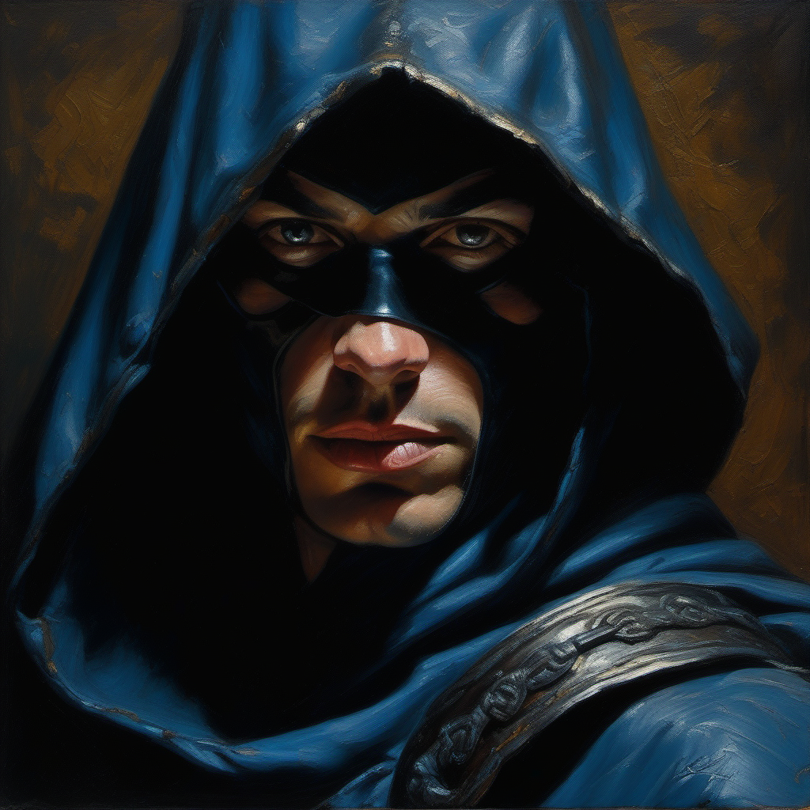
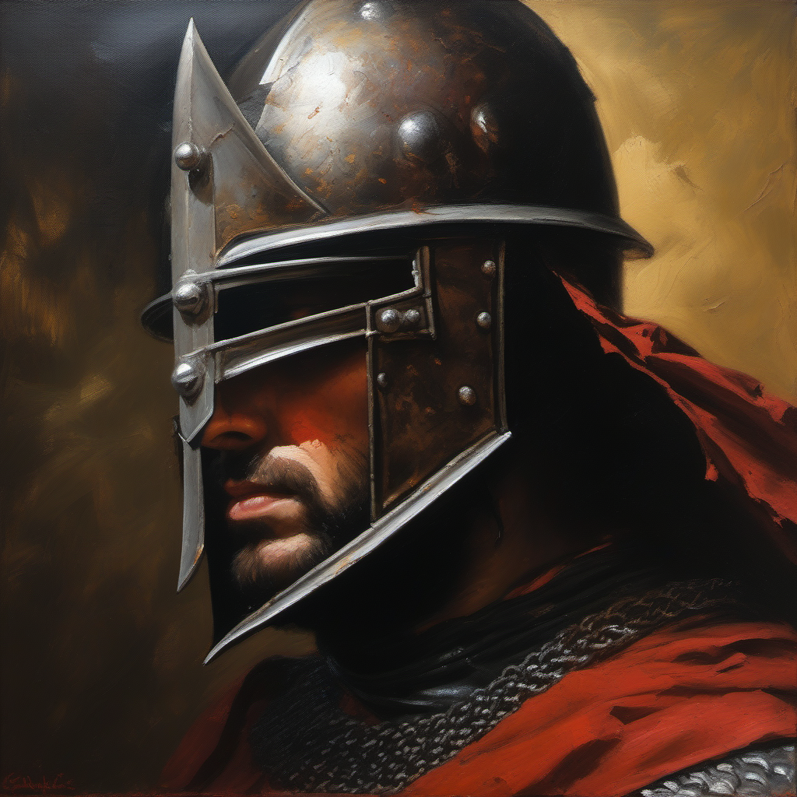
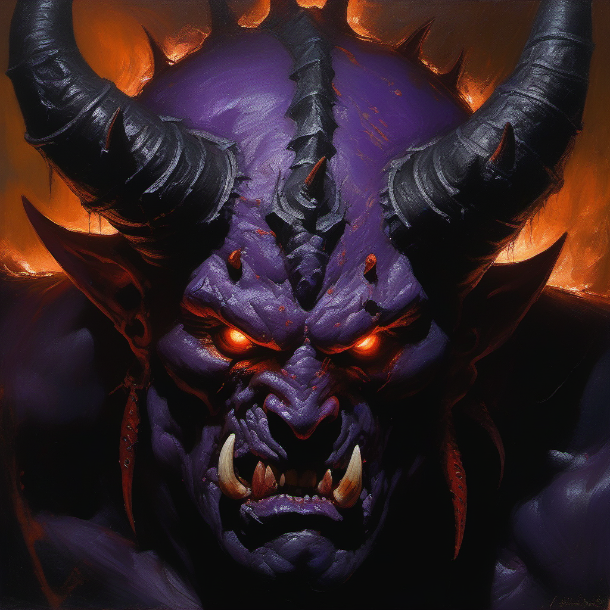
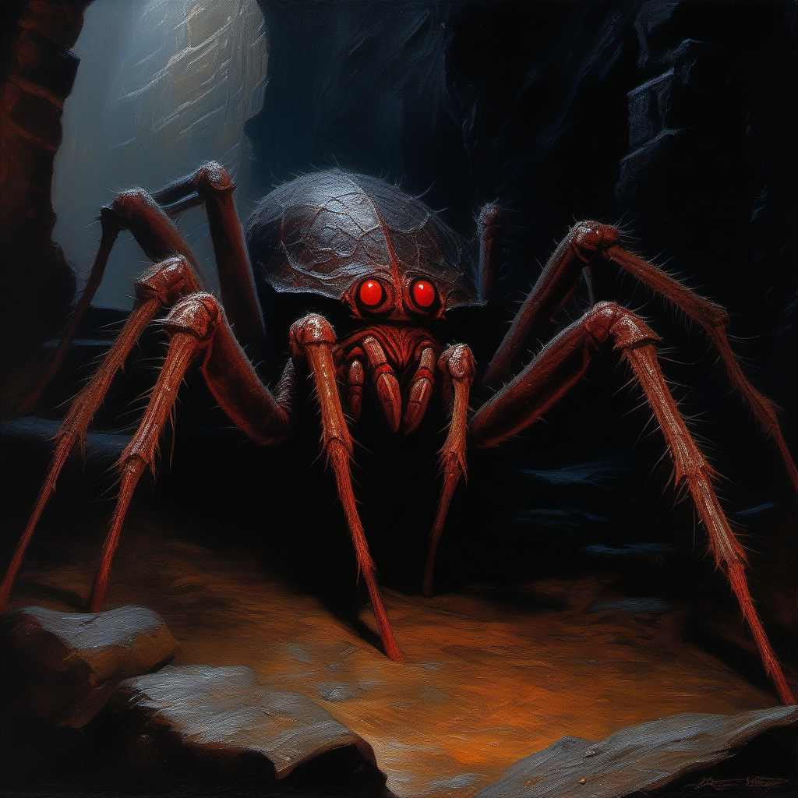
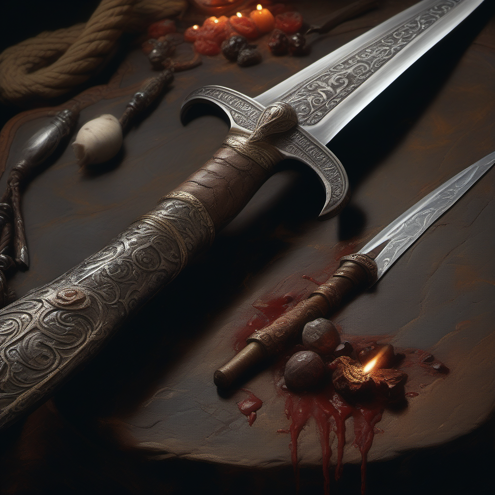
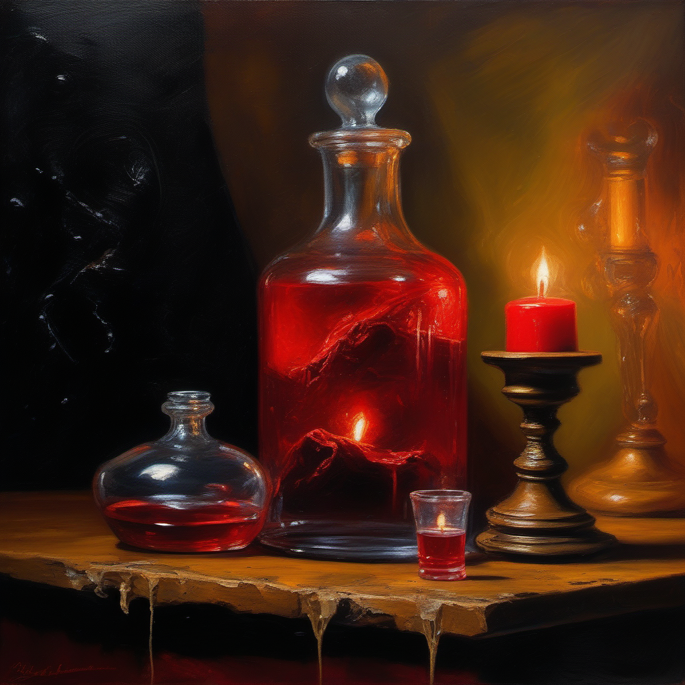
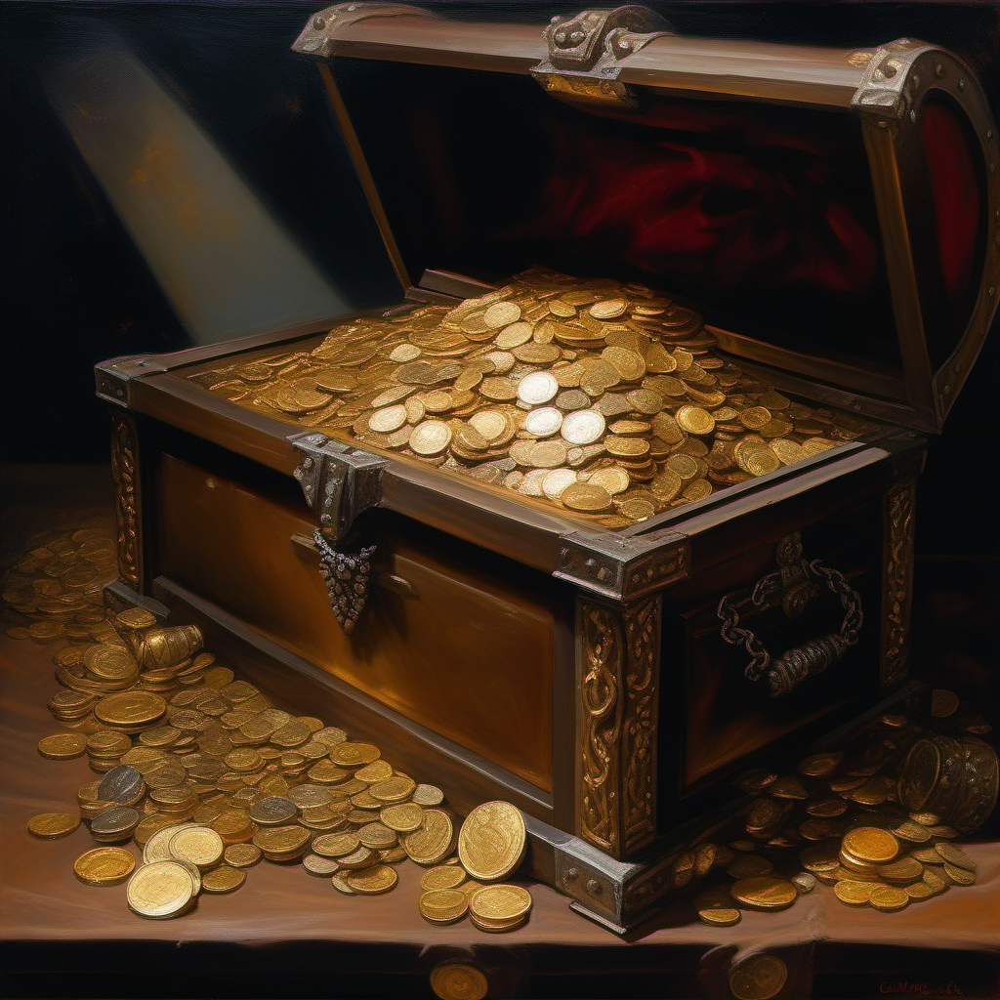
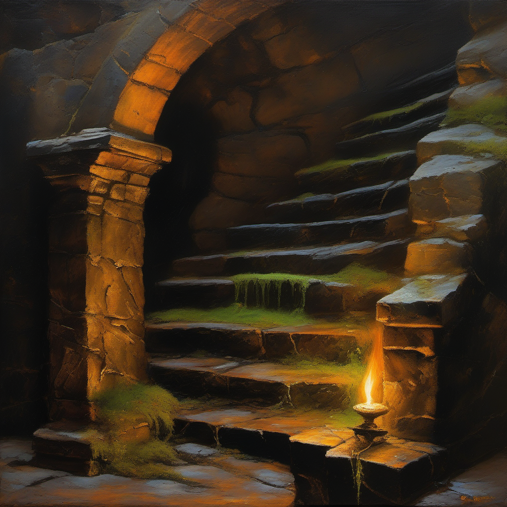

フード付きローグ。布のシワ、革ストラップ、金属バックルのディテール。

戦傷の騎士。凹んだ鉄兜、チェインメイルの一つ一つのリング。

紫の鬼。ひび割れた角、牙、傷だらけの肌テクスチャ。

巨大蜘蛛。複数の赤い目、棘のある脚、光る糸。

ダマスカス鋼の刃、革巻きグリップの縫い目、宝石の柄頭。

泡立つ赤い液体、ガラスの反射、コルク栓、蝋燭の光。

溢れる金貨、宝石の冠、木目と鉄帯の質感。

苔、蜘蛛の巣、錆びた松明台、滴る水、磨り減った石段。